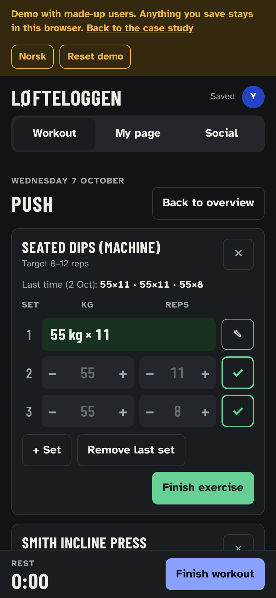
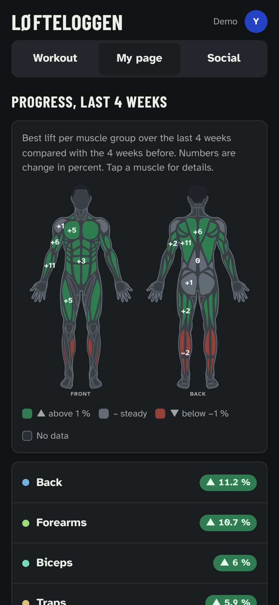
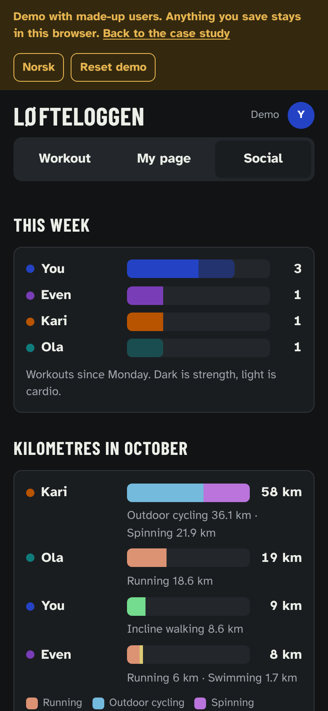

Løfteloggen
What it is
A training log for me and two friends. Workouts are logged set by set on the phone, during the rests between sets. Progress shows as a muscle figure from the front and back, where each muscle group is coloured by how much stronger it has become over the last four weeks.
The brief
The brief was my own. I did strength training three to five times a week without logging anything. My Apple Watch recorded that I trained, but not what I lifted. The free version of Hevy has room for four routines, I have five, and its graphs only go back three months.
The constraints were fixed from the start. Logging a set had to take under ten seconds, with one hand. Three people would share the app. No one would see what the others lift. That holds in the interface, not in the data.
What I did
Last session as grey text
The first version filled in the previous session's numbers as values, and a set only counted once it was ticked. The first session I logged was saved with all the numbers and zero sets, because I never tapped the tick. Now the previous session's numbers show in grey. One tap accepts them, and a locked set has its own button for editing.
One number per lift
The best set of each exercise is converted to an estimated one-rep max: weight × (1 + reps/30). That way 60 kg × 10 and 65 kg × 8 can be compared directly. Bodyweight exercises without added weight use the most reps instead.
Percentages instead of kilos
The social part shows change in percent, the last four weeks against the four before. Weights are never shown. Whoever lifts the least can make the most progress.
Primary and secondary muscles
Each exercise has a primary muscle that counts in full and secondary muscles that count half. Smith incline press counts for chest, and a little for shoulders and triceps. The catalogue has 69 exercises. Custom exercises get their muscles picked from a list.
Status without colour alone
Green, grey and red each have their own sign, ▲, – and ▼, and the number is written out. Each muscle group has a number in only one view, so the numbers do not collide on a narrow screen.
The figure
The first version was built from rounded rectangles and looked like a toy. It has been replaced with an open muscle map with outlines between the muscles. In the social part each person has their own hair colour and a chosen body shape, so the figures can be told apart.
Cardio as its own type
Running, cycling and swimming are logged with time and distance, and pace is calculated as you type. Cardio does not affect the muscle figure, because the percentages are based on strength lifts.
A demo without real users
The app is shared only with people I have invited. The demo is a separate site with made-up users. It shows the app without giving access to the real data. What you do in the demo is stored only in your own browser.
What it looks like
Three tabs: Workout, My page and Social.

My page has the figure, a list of muscle groups sorted by progress, a monthly report and curves for each exercise.

Social shows this week's workouts as bars, with strength dark and cardio light, and a feed of records that people can react to with emoji.

What I would change
Eight weeks before the figure says anything. The percentage needs four weeks to compare against. For the first two months the figure is grey for everyone.
Apple Watch data is typed in by hand. Apple Health has no connection a website can use, so cardio sessions are logged manually.
Half weight is an estimate. That secondary muscles count half is a rule I set, not something I have measured.
The formula gets less precise as reps go up. A set of 20 cable crunches says less about strength than a set of 6 squats, but both count the same.
The sessions are not locked down. The app only shows percentages to the others, but anyone with access can technically read each other's sessions.
Facts
- Role
- Concept, requirements, design decisions and testing. The code was written with Claude.
- Year
- 2026
- Tools
- HTML, CSS and JavaScript. Data is stored in the database of a published Claude artifact. The muscle map is from react-muscle-highlighter, MIT licence. The fonts are Barlow Condensed and Atkinson Hyperlegible.